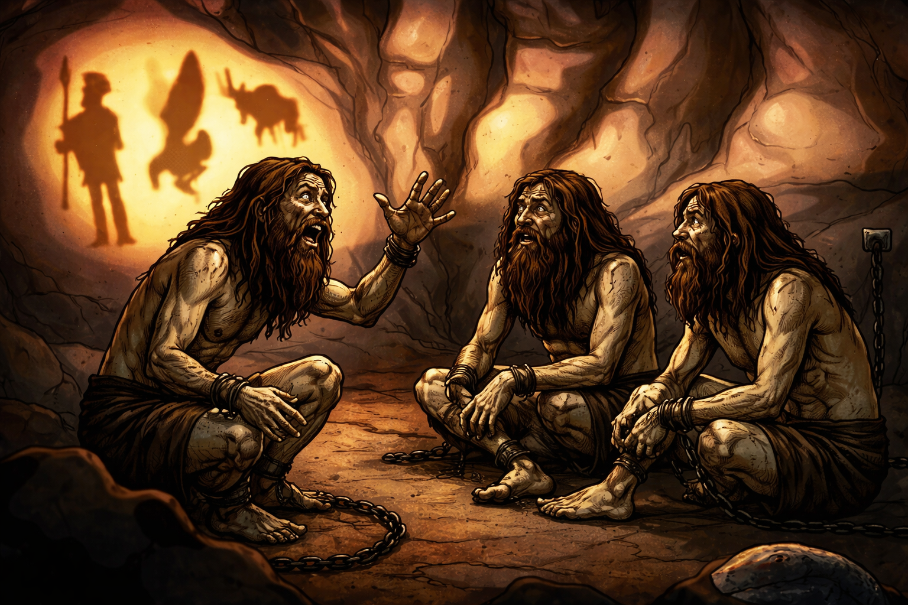

Tu primer impulso es hablar con los demás que estan contigo, pero al voltear a tu lado, un escalofrío sube desde tus pies hasta tu cabeza, lo cual te genera un sentimiento de paranoia y ansiedad. Ya no se trata de una conversación, sino en una desesperación por saber como llegaron ahí, por qué se ven tranquilo y no preocupados por la situación.
Imagen generada a partir de la principal con ChatGPT 5.2 Instant